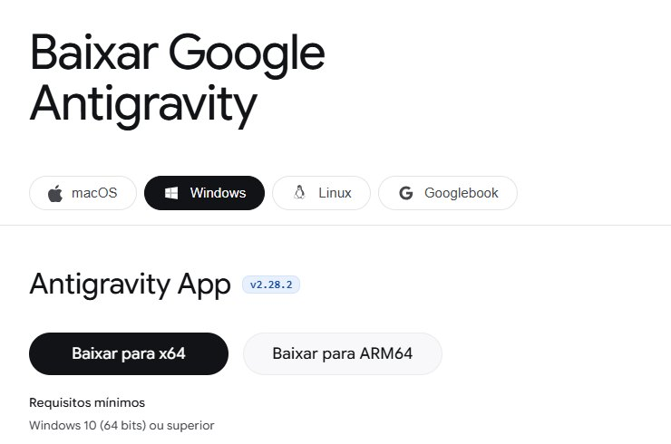

Antes do curso
Instalar o Antigravity
Uns 20 minutos, antes do primeiro encontro. Se travar, há um plantão para ajudar.
Você vai precisar de
- Um notebook ou computador com Windows 10 ou 11, ou Mac com macOS 12 ou mais novo. Celular e tablet não servem.
- Uma conta Google pessoal, a que termina em @gmail.com, com a senha e o celular da verificação à mão. A conta da universidade só funciona se a instituição tiver liberado o Antigravity.
- Permissão para instalar programas. Em computador da instituição, às vezes só o suporte de TI instala.
- Ter 18 anos ou mais, exigência do próprio Antigravity.
Passo a passo
Instalar o Antigravity
-
No notebook, digite este endereço
antigravity.google/download
Na barra de endereço do navegador, no alto, não na busca do Google. Baixe só daqui.
-
Clique em Baixar para x64
Quase todo notebook é x64. O site já escolhe o seu sistema. Não é o “Antigravity CLI”, mais abaixo.

-
Abra o arquivo baixado
Ele vai para a pasta Downloads. No navegador, Ctrl+J mostra a lista do que você baixou; clique no arquivo.
Downloads Antigravity-Setup.exe -
Se o Windows avisar, confira e siga
Se aparecer “O Windows protegeu o computador”, clique em Mais informações e depois em Executar assim mesmo. Só faça isso com o arquivo que veio de antigravity.google.
-
Entre com a conta Google pessoal
Ao abrir, o programa pede para entrar. Use a conta @gmail.com.
-
Decida se o Google pode usar suas conversas
Na conta pessoal, isso vem ligado. Para desligar, abra Settings (Configurações) e procure a opção sobre usar suas interações para melhorar os produtos.
-
Teste com uma pasta vazia
Abra uma pasta vazia com Open Folder e escreva:
Quais arquivos existem nesta pasta?
Respondeu que está vazia? Tudo pronto.
Deu errado?
- Entrar com a conta da universidade não funciona
- O Antigravity só aceita conta de instituição quando ela libera o programa. Use uma conta Google pessoal, como @gmail.com.
- Não tenho permissão para instalar
- Em computador da instituição, quem instala costuma ser o suporte de TI. Peça a instalação com antecedência, ou traga um notebook pessoal.
- Não acho o arquivo baixado
- No navegador, aperte Ctrl+J. A lista mostra o arquivo; clique em “Mostrar na pasta”.
- Ele diz que preciso ter 18 anos ou verificar a idade
- O Google pede a verificação de idade da conta. A FAQ oficial explica como fazer: antigravity.google/docs/faq.
- Apareceu uma mensagem de erro em inglês
- Tire uma foto da tela ou copie o texto da mensagem e traga ao plantão. Com o programa já funcionando, você pode colar a mensagem na própria conversa e perguntar o que fazer.
Endereços e requisitos conferidos nas páginas oficiais em 1º de novembro de 2026.